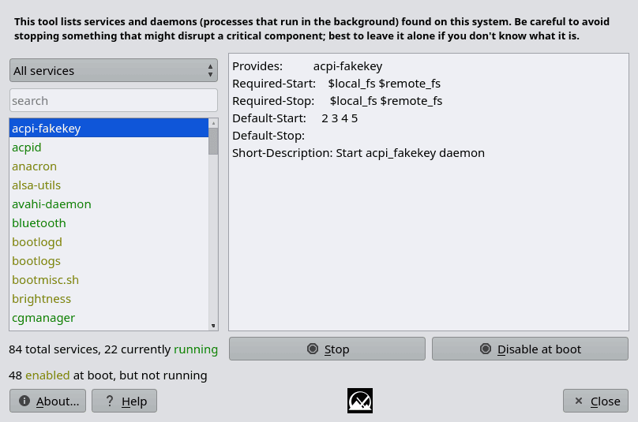
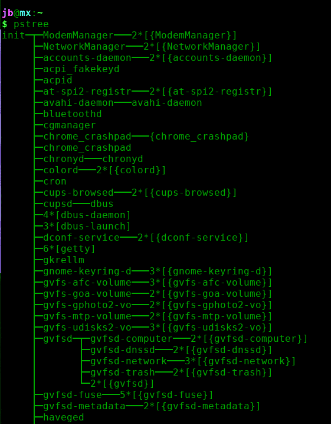

Adapted from the MX Linux help page dated August 31, 2023.
MX Service Manager is a tool for managing services and daemons, allowing the user to control which are started at boot time.
Important: Read the introductory warning text in the application carefully before making changes. Disabling the wrong service can leave a system partially or completely inoperable.

The main screen is divided into two columns. The left side lists detected services and daemons. Items are distinguished by color to indicate services that are running and services that are enabled but not currently running.
The top of the left column contains two controls:
The search box only matches service names. For example, searching for Samba may not find the related service names smbd and nmbd.
The right column displays information for the selected item. With SysV init this comes from the service script. With systemd it comes from the output of the systemctl status command. The amount and quality of that information varies between services.
Below the information pane are two action buttons:
Select the service you want to change, then click the appropriate button. A confirmation message appears when the action succeeds.
A useful overview of running processes can be obtained in a terminal with:
pstree
That command shows services in a tree structure so their relationship to running processes is easier to understand.

The original online help page is available at mxlinux.org/wiki/help-service-manager/.